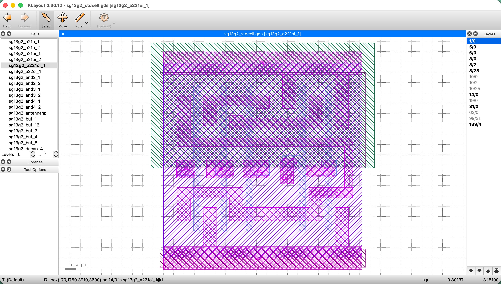
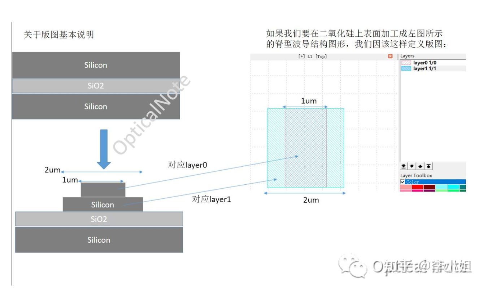

实物 → 光刻与材料加工 → 为什么修改掩模。
建立基础 →A FIELD GUIDE FOR AI ENGINEERS
从一片晶圆，
看懂 OPC。
先看懂芯片制造与 OPC，再追踪工程师如何接收任务、组织优化和验证。
最后把大模型接入同一条实验闭环，明确输入、动作和价值。
从实物开始 ↓9 个章节 · 一项任务贯穿
结构示意 · 非实物照片
先记住一句话
OPC 是提前修改掩模图形，让经过光刻后印出的图形，更接近设计目标。
全站主线 · 从制造到工程，再到大模型01—03 · 理解加工与修正 04—06 · 理解工程师的工作 07—09 · 接入并评价大模型
沿着同一项 OPC 任务，走完三段路。
接收任务包 → 匹配模型与工具 → 自动求解、诊断与验证。
进入工程任务 →状态与约束 → 决策和工具调用 → 实验记录、基线与收益。
进入 Agent 闭环 →贯穿任务：在指定工艺层、固定评价规则和预算下，生成并验证候选掩模。网站提供教学说明与演示，并未连接生产 OPC 工具。
01 / 芯片与实物
先认识芯片的实物。
从晶圆、裸芯片和封装开始，建立后面制造流程的空间概念。
再往前一步：圆形从哪里来？
人工长出晶棒，再把晶棒切成圆片。
以常见硅晶圆为例：原料经过提纯，制成高纯硅，再人工生长成大致圆柱形的单晶硅棒。常见的 CZ 方法是在熔融硅中放入籽晶，一边旋转一边拉出晶体；随后整形、切片、研磨、抛光和清洗，得到晶圆。天然矿物提供原料，圆形晶圆则是加工制造出来的。
第一种切法：晶棒 → 薄圆片
就像圆柱形食材横切后得到圆片。刚制成的晶圆可以像镜面一样，没有照片里的方格。方格中的电路，是后续制造加工的。
第二种切法：圆形晶圆 → 方形 die
先在整片晶圆上加工很多矩形电路区域，再沿它们之间的横竖切割道分离。芯片常为矩形，也可能近似正方形；无需把整个圆切成一个大方块。
圆周边缘怎么办？
边缘放不下完整芯片的区域，通常不会作为成品芯片；即使内部形状完整，也还要通过质量测试。切割可以使用精密刀片或激光等工艺，通常借助胶膜固定，切后再逐颗拾取。
一整片晶圆
电路先在整片晶圆上加工。每个重复区域对应一颗待分离的裸芯片。
其中一颗裸芯片 A
把 A 从晶圆切下来，它就是一颗 die。晶圆上的其他区域也可切成各自的 die。
封装芯片：A 在里面
将 A 固定、连接并保护，形成封装产品。外壳是容纳 A 的结构。
一片晶圆 → 切割 → 多颗裸芯片其中一颗（或多颗）裸芯片 + 连接 / 保护 / 散热结构 → 封装芯片
结构与尺寸均为教学示意。这里展示单颗 die 的引线键合封装；多芯片封装可包含多个 die，连接方式也可能使用凸点。照片是不同产品的例子。
晶圆实物照片
晶圆
通常是圆形的薄片。表面的重复小区域，是一颗颗芯片的加工区域。常见硅晶圆有 200 mm、300 mm 等直径。
裸芯片实物照片
裸芯片
从晶圆上切割得到的单颗芯片。电路结构在它上面；它通常还需要电连接、保护和散热。
封装芯片实物照片
封装芯片
我们在电路板上常见的器件。内部包含裸芯片；外部可能有引脚、焊球或金属接点。
看照片时留意
晶圆上的小方格不是一个个晶体管，而是芯片区域。彩虹色也不是电路在发光，常与薄膜和表面对光的反射有关。不同产品的形状和外观会不同。上面三张照片来自不同产品，并非同一颗芯片的连续加工实拍。
晶圆制造→切割成裸芯片→封装→检测与电性测试
简化顺序：实际流程还包含晶圆测试、多个中间检查和可能的返工。
交给下一章
电路结构先在晶圆上逐轮加工，再切割和封装；下一章沿着加工过程看光刻的作用。
继续阅读 →02 / 制造与光刻光刻定义位置，
光刻定义位置，
后续加工形成结构。
先理解掩模、临时光刻胶和真实材料之间的关系，再讨论为什么需要修正掩模。
真实光刻实验室
真正的光刻工作环境
伦敦纳米技术中心的光刻洁净实验室。这里展示环境，不是量产 EUV 光刻机。橙色照明有助于避免短波长环境光影响光刻胶。
教学示意：不同光刻系统的实际光路、掩模和光学元件不同。
从掩模到实物 · 光刻只负责确定加工位置
光照一下，先改变的是光刻胶；电路要靠后续加工逐步做出来。
晶圆上既需要能导电的材料，也需要绝缘材料和能控制电流的晶体管。光不会凭空生成这些东西。光刻把“在哪加工”的图案写进临时的感光材料——光刻胶；沉积、刻蚀、掺杂等工艺再改变真正的材料。
掩模到底是什么？它上面就是电路的线吗？
实体掩模是带图案的光学模板。常见 DUV 掩模用透射、遮光或相位变化调制光；EUV 掩模使用反射结构。掩模装在光刻机内，投影光学把图案成像到涂胶的晶圆上。它不贴到晶圆上，也不会把掩模材料转移过去。
它通常对应某次图形化加工，图案可能是栅极、金属线、接触孔、通孔或掺杂区域。只有部分加工图案最终对应导线；还有许多图案用于开孔、隔离和制作晶体管。经过 OPC 的图形还可能带补偿和辅助结构，不能把掩模上的每一条线都当成芯片中的导线。一层也可能需要多张掩模和多次加工。
设计几何 → 修正与掩模数据准备 → 写入、加工、检查实体掩模掩模进入光刻机 → 对准晶圆已有结构 → 曝光一个区域 → 移动晶圆，重复曝光其他芯片区域
跟着同一条线，看一次图形转移。
下面选一个减法刻蚀的薄膜图形化例子：已经有一层待加工薄膜，希望中间保留一条线，两侧去掉。采用正性光刻胶，曝光区域在显影后更容易被去除。图是二维截面，比例、厚度和光路均为教学示意。
临时光刻胶待加工薄膜下方基底 / 已有结构
1 · 先铺薄膜，再盖一层胶
开始时：整面薄膜都在，整面胶也都在。
橙色胶像临时保护层，覆盖在蓝绿色薄膜上。现在还没有做出那条细线。
2 · 让两侧的胶受光，中间不受光
曝光后：胶的化学性质变了，材料还没被挖走。
这个正胶例子里，光刻机把光投到两侧；中间胶保留原来的响应。受光的胶随后更容易被显影液去除。
3 · 显影：洗掉两侧受光的胶
变化发生在橙色胶层；薄膜仍是一整片。
两侧胶被去掉，中间胶留下。下方薄膜两侧暴露，中间被胶盖住。
4 · 刻蚀：去掉两侧暴露的薄膜
这一步才真正改变蓝绿色材料的形状。
刻蚀设备去除两侧薄膜。中间的胶保护下面的薄膜，于是中间材料留下；此时胶还在。
5 · 去胶：拿掉临时保护层
留下的蓝绿色细条，才是本例加工出的线。
最后清除中间的胶并清洗，薄膜细条保留在基底上。这只完成了一个图形化步骤。
虚线框表示之前有、现在已去除的材料，不是仍存在的结构。颜色变浅只用来标记胶受过光；不表示真实胶一定这样变色。掩模与投影光学未画入截面，图中箭头仅表示落到胶面的曝光区域。
“刻蚀”就是有选择地去掉材料
干法刻蚀常用等离子体和反应气体，湿法刻蚀使用液体化学药剂；留下的胶或硬掩模保护不该去掉的部分。刻蚀设备与光刻机是不同设备。实际流程可能先把胶图形转移到硬掩模，再刻蚀目标材料。
如果这个例子的薄膜是导电材料，刻蚀后留下的细条可以成为导线；如果是绝缘材料，刻出的开口可能用于随后填入金属。相同的“图形”，配上不同材料和加工步骤，得到的电路结构不同。
正性 / 负性胶的去除区域不同，掩模极性也要配套。上例不代表所有金属互连工艺：铜互连常先在介质中刻出沟槽和孔，再沉积 / 填充金属并平坦化，而不是直接按这个例子刻出铜线。
多轮加工怎样拼成能工作的电路？
- 做器件。在硅中形成需要的区域和隔离结构，制作栅极、绝缘层、源漏等；通过掺杂等步骤改变局部电学性质，形成能控制电流的晶体管。
- 做连接。制作接触孔、金属线和层间通孔，把器件按设计接起来。绝缘材料隔开不该相连的地方，通孔连接需要连通的上下层。
- 逐轮对准、加工、检查。不同图案必须落在对应位置。例如通孔既要接上下面的线，也要接上上面的线。过程中反复使用沉积、光刻、刻蚀、清洗、热处理和必要的平坦化。
电路的功能来自材料的电学性质、器件结构和连接关系。光刻精确指定位置，后续工艺把这些位置变成实物；晶体管和互连共同构成电路。
给 AI 工程师的类比
已知成像系统会让图形失真，提前设计一个“预失真”的输入，让输出更接近目标。
它是带工艺与制造约束的逆问题。掩模与目标长得越像，并不代表最后印得越好。
点击上面的名词，查看它在流程中的含义。
交给下一章
直接复制设计图形会产生失真，OPC 因此提前修改掩模。下一章观察修改如何影响预测结果。
继续阅读 →03 / OPC 的作用OPC 改的是掩模，
OPC 改的是掩模，
目标是改善印出结果。
用定性实验区分目标、候选掩模和预测轮廓，再认识主图形、辅助结构及求解方法。
目标图形
希望最终得到的形状
掩模图形
直接采用目标形状
预测印出轮廓
线端缩短、角变圆
本演示用人为绘制的几何变化帮助理解，不计算真实光场、剂量、焦距或 EPE，不代表任何设备或工艺效果。实际结果必须由校准模型与量测验证。
辅助结构的作用
辅助结构做在掩模上，但不应在晶圆上形成独立图形。
SRAF 是掩模上的真实结构。“不印出”指曝光、显影后，不希望它在晶圆表面的光刻胶里形成独立的线或孔；并非不制作在掩模上。
| 位置 / 阶段 | 主图形 | 辅助结构 SRAF |
|---|---|---|
| 掩模上 | 有真实结构 | 也有真实结构 |
| 曝光时的光场 | 影响光强分布 | 也影响光强分布 |
| 显影后的晶圆光刻胶 | 希望形成目标结构 | 希望没有独立结构 |
光刻不是把每个小图形独立复制。主图形和附近辅助结构共同改变衍射光场，经光学系统后形成新的光强分布。SRAF 的位置、宽度和形状经过选择，可以改善主图形成像对比度、边缘陡峭程度或工艺窗口。
一个直觉是：给孤立图形安排“光学邻居”，让它的成像环境更合适。实际效果取决于照明和工艺，并非随便加两条线就有效。
示意中，主图形边缘的光强变化更陡。阈值轻微变化时，交点位置移动更小，意味着尺寸对这类变化更不敏感。真实工艺需要多条件仿真验证。
它的尺寸、位置与工艺条件经过选择，使其仍能改变光场，但自身的光刻胶响应不足以形成独立结构。合格范围指已验证的焦距、曝光剂量等条件范围；必须检查范围内的 SRAF 意外印出风险。若晶圆上多出辅助条或孔，就是需要排查的问题。
曲线由教学公式绘制，不是物理仿真或量测。为解释阈值概念，示意采用亮区域对应目标开口；实际图形极性与光刻胶响应随工艺变化。不能只用“低于一个固定阈值”判断所有工艺中的 SRAF。
来源：Siemens SRAF 成像改善与防止印出 ↗查规则补偿
依据线宽、间距和图形类型，应用预先制定的修正规则。
边缘式 OPC：仿真与移边
以分段边缘的位移为变量，依据工艺模型反复仿真与调整；也可以使用梯度。
ILT：更自由的形状优化
同样使用工艺模型，可优化像素、水平集或曲线等表示；差异在变量与允许的形状空间。
方法与动作分开理解
移边、线端补偿和 SRAF 是可配置的几何动作；规则、边缘式模型驱动 OPC 和 ILT 是求修改方案的方法。ILT 也使用工艺模型，两者不能按“是否用梯度”划分。典型边缘式方法优化已有边段的位移；像素式 ILT 优化掩模网格的数值，更自由的表示还可以用水平集或曲线。实际工具存在混合方案。
梯度告诉变量朝哪里改，不规定变量是边缘位移还是像素。主图形与辅助结构可分步或共同优化，具体能力由工具模块和配方决定。
DiffOPC：边缘也可以用梯度优化 ↗交给下一章
理解修正目的后，接收一项明确任务，先核对设计文件和工艺资料。
继续阅读 →04 / 接收任务与输入接收任务，
接收任务，
读懂输入与约束。
先明确要为哪项工艺和设计准备掩模，再认识 GDS 的组织与图形分类。
接收的是一项明确的 OPC 任务，以及配套的工艺资料
贯穿后文的任务是：为指定设计的某个加工层生成候选掩模，在规定条件下满足成像与掩模制造要求，并控制计算成本。不是把整套工厂制造流程输入软件后，自动决定所有加工技术。
| 输入类别 | 实际接收什么 | 用途 |
|---|---|---|
| 设计与加工目标 | GDS / OASIS、设计版本、顶层 cell、图层派生规则、单位与极性、评价终点。 | 确定哪项掩模任务、希望最终印出什么。 |
| 工艺预测资料 | 对应加工层的已校准模型、模型版本、适用范围及验证说明。 | 预测候选掩模会怎样印。第五章先解释它的含义。 |
| 已有运行方案 | 基线 OPC 配方、工具 / 模块版本、计算区域和已有参考结果。 | 从可复现的现有方案出发，避免随意猜初始设置。 |
| 验收与资源约定 | 扫描条件、EPE / CD 等限值、制造与对准规则、允许修改的项、回归集和实验预算。 | 确定怎么算合格、哪些变化允许尝试，以及成本上限。 |
接收后先核对配套关系，不急着调参。模型或规则缺失时，先补齐；已有合格流程时可复用；预测与实测不一致时，要诊断模型、量测或工艺问题。下面先认识设计文件的组织，随后再进入模型与求解器。
先认识输入 · 再运行 OPC
KLayout 实际界面 · sg13g2_stdcell.gds · 点击查看原图 波导结构与版图对照 · 点击图片查看原尺寸 · 保留原图标注
GDS 显示分类 实体材料层 / 金属层 掩模 / 曝光次数
工程师拿到的 GDS，里面装的是什么？
GDSII（常见扩展名 .gds）是二进制版图数据库。它记录几何坐标、图层编号、文字和单元引用。软件解析这些记录，再画成屏幕上的版图。它不是 PNG，也不是电路行为代码；OASIS 是另一种常用版图交换格式。
先认识 cell、layer 和 datatype
GDS 既要组织版图模块，也要给几何图形分类。这三个概念分别负责不同的事情：
| 概念 | 是什么 | 用来做什么 |
|---|---|---|
| Cell · 版图单元 | 一个有名字的几何容器，可以保存图形，也可以引用其他 cell。 | 组织版图层级并复用模块。一次引用记录放置位置和方向，称为实例。cell 不是材料层。 |
| Layer · 层号 | 附在几何图形上的分类编号。 | 按工艺约定区分图形所属的类别；编号本身不表示材料高度或加工顺序。 |
| Datatype · 用途分类号 | 与 layer 一起记录在几何图形上的另一个分类编号。 | 进一步区分同一 layer 下的图形类别。具体用途查对应工艺的映射表，不由 GDS 格式统一规定。 |
Cell 管组织，layer / datatype 管分类
一个 cell 内可以包含多种 layer / datatype 的图形；同一种分类也可以出现在多个 cell 中。查看器常把每个 layer / datatype 组合列为一个显示项，所以列表里“有几层”不等于实物有几层材料。
layer / datatype 的斜杠只是软件显示两个编号的写法。下面直接用波导图里的 1/0 和 1/1 来读。
在真实软件里，对照这三个概念

- 左侧 Cells：选择查看哪个版图单元。图中选中的是
sg13g2_a221oi_1，上方标题也显示这个名称。列表里的其他名称是其他 cell，不是其他材料层。 - 中间画布：显示当前单元的几何。不同分类的图形叠加在同一坐标中。颜色和斜线填充是显示样式；这不是芯片实物照片，也不能据此判断材料高度。
- 右侧 Layers：列出 layer / datatype 组合。
8/0与8/2的 layer 都是 8，datatype 分别是 0 和 2。它们可以分别显示和处理，但不表示两层不同高度的金属。
在 SG13G2 的图层约定里，8/0 是 Metal1 绘制图形，8/2 是 Metal1 引脚标记。截图显示分类编号，实际用途仍要查该工艺的图层表。不要按颜色猜它是哪种材料。
画布左下角还有 0.4 μm 比例尺：GDS 不只包含 cell 和分类编号，还保存几何坐标及单位等信息，软件才能把它们按实际尺度画出来。
用这张波导图理解 layer / datatype
先看左边的实物截面，再看右边的俯视版图：左边希望做出的不同宽度结构，用右边不同分类的二维图形来描述。这里只借这张图认识版图编号，不展开波导的加工流程。

看右上角的图层列表：layer0 1/0、layer1 1/1
1/0：layer 编号是 1，datatype 编号是 0。1/1：layer 编号也是 1，datatype 编号是 1。
这两类图形的 layer 相同，datatype 不同，所以软件可以分别保存、显示和处理。图中 layer0、layer1 是显示名称；不要把名称里的 0、1 当成斜杠前的 GDS layer 编号。
按原图箭头：较窄的 1 μm 区域对应图中 layer0，较宽的 2 μm 区域对应 layer1。两类图形在同一坐标中叠加，表达所需结构的横向范围。
这些编号怎样对应材料和加工，由这项工艺的映射与规则规定。不能只凭 1/0、1/1 推断材料、高度或刻蚀顺序；datatype 为 1 也不意味着“第一层金属”。本图未提供完整工艺规则，因此不据此指定每类图形的刻蚀深度或 OPC 方式。
原图含 OpticalNote 及作者水印；未修改图片。这里只解释图中可见的编号与几何对应关系。
“选 cell”是确定设计范围，不是逐个实例人工检查。
完整芯片通常有一个顶层 cell，引用下面的模块和实例。指定这个入口，软件就能沿着引用找到它们，并把各实例的坐标放到整颗芯片的坐标中。单元库则可能有很多独立 cell，尚未组成一颗芯片。
查看局部模块，可以打开相应 cell；做整颗芯片的任务，则通常从指定顶层处理其覆盖的设计。文件里存在但未被该顶层引用的其他库单元，不会因此全部成为本次芯片的输入。
为什么 OPC 任务要指定加工层？谁决定选哪个？
制造栅极、金属线和通孔，需要不同的加工图案，设备 / 材料条件和误差要求也可能不同。不能把全部图层叠成一张图，一次曝光就制造整颗芯片。
任务范围由已批准的工艺和掩模流程确定。例如，这项任务负责准备某设计的 Metal1 掩模数据，工程师就加载该步骤对应的图形派生规则、工艺模型、OPC 配方和验证标准。不是在彩色版图里随意挑一个颜色；任务也可以通过脚本批量配置，不一定靠点击。
GDS 图层 → 加工目标 → 掩模任务，不一定一对一
加工目标可能由几个 GDS 分类做合并、相减、加入填充等操作得到；一项加工层也可能分解为多张掩模。这里的“选 Metal1”是简化说法，实际要按工艺规定准备对应掩模任务的目标。引脚和文字等标记可能辅助理解或数据处理，但不是各自曝光成一层材料。
是不是所有图层、所有线都要 OPC？
| 你在数什么 | 实际怎样处理 |
|---|---|
| GDS 的所有分类 | 不是全部当作独立掩模修正。引脚、文字、器件识别等用途通常不直接形成曝光图形；按流程选取或派生制造数据。 |
| 不同加工层 | 由该工艺的要求决定。有的步骤需要模型驱动 OPC / ILT，有的可采用规则补偿或几何偏置；不是每层统一执行同一种强度的修正。 |
| 本次掩模覆盖的全部目标图形 | 正式任务通常批量覆盖规定范围。软件按配方处理相关图形，最终按规定范围验证；不只处理工程师屏幕上看见的几条线。 |
| 每条线的每段边缘 | 不一定都发生移动，更不会统一移动相同距离。某处已经合格，可以不动；某处需要延长，某处需要收缩或辅助结构。具体由算法、规则和约束决定。 |
补充参考：下载文件的图层、材料关系与软件
SG13G2 示例文件：sg13g2_stdcell.gds
该示例文件包含 84 个 cell、15 种层号与用途号组合（含文字记录）。例如 sg13g2_nand2b_1 是其中一个单元。这是该示例文件的统计，不是 SG13G2 全工艺的层数，也不是 84 层材料。
查看器里的 8/0 表示“层号 8、用途号 0”，8/2 是同一层号的另一种用途。数字是分类编码，不是高度或加工顺序；颜色也是显示设置。下面的名称来自 IHP 图层表，换工艺后相同编号可能有别的含义。
| GDS 分类 | SG13G2 名称 | 这些图形用于什么 |
|---|---|---|
| 1/0 · Activ | 有源区 | 定义器件相关的硅区域，不是金属走线。 |
| 5/0 · GatPoly | 栅极多晶硅 | 参与定义栅极及相关图形。 |
| 6/0 · Cont | 接触孔 | 定义第一层金属与有源区或多晶硅之间的接触位置。 |
| 8/0 · Metal1 | 第一层金属绘制图形 | 描述这一层的导电形状。 |
| 8/2 · Metal1 pin | 第一层金属引脚标记 | 表示连接接口；不是额外一层金属薄膜。 |
| 19/0 · Via1 | 第一层通孔 | 定义 Metal1 与 Metal2 之间的连接位置。 |
| 10/0 · Metal2 | 第二层金属绘制图形 | 描述另一高度上的导电形状。 |
| 31/0 · NWell | N 阱 | 定义具有特定掺杂性质的区域，不是一张叠在金属上的薄板。 |
为什么要多图层？每层是不是直接盖上去？
制造既要做晶体管，又要做连接、隔离和保护，所以需要分别描述不同加工区域。多层金属还让线路可以从不同高度穿过，缓解单个平面里的布线拥挤。
在文件里：各层使用共同的二维坐标，查看器可叠加显示。在实物里：有些对应上下堆叠的材料，有些对应孔或掺杂区域，还有些只是标记。制造会包含沉积、去除、填充和改性；不是把每个 GDS 图层都做成一张薄片直接盖上去。
同一个位置有两层线，并不自动连通。
俯视时两条线可以重叠或交叉；只要中间有合格的绝缘结构，就不表示短路。若要连接，必须在合适位置制作接触 / 通孔及导电连接。图为简化截面，不按比例。
一般有多少图层？先明确你在数什么。
由 layer / datatype 等组合区分，可包含绘制、引脚、文字、识别和填充用途。随工艺及文件内容变化，完整项目可有数十至数百种分类；小库只用其中一部分，没有统一固定数量。
是工艺堆叠中的结构，数量不能从显示列表直接数出来。例如 SG13G2 有五层薄金属和两层厚顶层金属，共七层金属；此处的标准单元文件不需要把七层全部用到。
由加工和图形分解流程决定。一张掩模可能由多个设计分类派生，同一加工层也可能需要多张掩模。不能用 GDS 列表长度直接换算。
不同图层会不会互相影响？
- 连接与对准：通孔要落在线上，线要覆盖住通孔。层间偏移或尺寸变化可能让连接变差，甚至断开。
- 电学影响：即使绝缘隔开、不直接导通，邻近导体仍可能产生电容耦合，影响信号与时序。
- 加工影响：下方结构的高度、材料和图形密度会影响后续加工，例如表面平整程度、光学反射和刻蚀响应。
- OPC 的处理范围：一次任务常处理指定加工层的图形，但要配套该层的工艺环境；相邻图形影响成像，必要的跨层连接和对准检查也要另行纳入验证。不是把所有 GDS 层简单相加再曝光。
哪些软件能操作这些输入？
| 软件 | 主要操作 | 是否负责光刻修正 |
|---|---|---|
| KLayout | 打开、选 cell / 图层、测量、编辑、裁剪、叠图及导出；可用 Python / Ruby 自动化。 | 主要是几何处理；打开 GDS 不等于计算光刻结果。 |
| Calibre WORKbench / DESIGNrev；Proteus WorkBench | 在商业流程里查看、处理版图及分析结果；工作台可组织相应工具运行。 | 由对应 OPC / ILT 和验证模块执行计算。 |
| OpenILT | 研究仿真、掩模优化和评价；典型输入是 GLP 几何或二值图像。 | 可运行研究优化；GDS 通常先经几何工具选层、裁剪、按物理尺度转成所需输入。 |
从 GDS 进入下一步，实际要准备什么？
文件 + 顶层 / 设计范围 + 图层派生规则 + 单位 / 极性 + 目标区域与邻域。进入 OPC 时，再指定匹配的工艺模型、现有修正配方和验证规则。第六章的线端案例演示局部调优和回归；局部片段不等于全部生产交付范围。
示例文件统计对应 sg13g2_stdcell.gds；其他版本可能不同。图层间关系必须结合工艺定义与设计规则解读。
交给下一章
现在已有目标、模型文件、基线配方和规则。下一章明确这些文件分别负责预测、修正还是验收。
继续阅读 →05 / 工艺模型与工具模型预测加工，
模型预测加工，
求解器计算修正。
先区分模拟器、工艺模型、OPC 配方和验收规则，再认识工具与优化难点。
在工厂里：先校准并验证工艺模型，再生成和验证掩模
模拟器：给定掩模，预测印刷结果 工艺模型：让预测符合这项工艺 OPC 配方：规定怎样修改掩模
模拟器是“计算引擎”，工艺模型是“具体工厂的配置与规律”。
打开 GDS 后，软件还不知道这层图形会怎样印出来。工程师需要指定加工层、设备与工艺条件，并加载对应的模型。下面用“某条产线的某一层，出现线端缩短”串起工作；这是依据公开工具功能整理的代表性流程，分工和验收标准由具体项目决定。
执行光学及工艺计算，输出光强、光刻胶图形或轮廓。它回答“这个掩模在这些条件下会印成什么样”。
包括光学配置及经实测拟合的响应参数，也可能包含预计算数据。模型对应特定工艺、层和适用范围，不是整个工厂通用的一份配置。
指定分段、移边、优化权重、辅助图形和停止条件等。求解器按配方反复调用模拟器，寻找满足要求的掩模。
掩模 + 工艺模型 + 焦距 / 剂量 → 模拟器 → 预测轮廓目标固定 → OPC / ILT 求解器修改掩模 → 仿真并比较 → 继续迭代
先拆开“工艺模型”这个词
它是一套把掩模映射到加工结果的数学模型，以及这项工艺的参数。
这里的模型不默认指神经网络，也不是一张 GDS。工具提供计算公式与可选模型形式，工程师提供设备、材料与工艺信息，再用量测校准其中需要拟合的参数。实际软件可把几个环节合并，或把部分计算预先压缩成核文件；下面按物理作用拆开。
掩模几何↓ 掩模响应 + 光学投影晶圆面光强分布↓ 光刻胶曝光 / 烘烤 / 显影响应显影后光刻胶轮廓↓ 刻蚀响应（若评价刻蚀后结构）刻蚀后材料轮廓
① 掩模响应：这些形状怎样改变光？
输入：掩模几何、透射或反射特性；详细模型还考虑材料、厚度和入射方向。
输出：供光学投影计算使用的光场响应。
简单模型把掩模看成理想二维透光 / 遮光图；更详细的模型处理三维结构引起的相位与振幅变化。它可作为光学模型的一部分，并非总有单独文件。
② 光学投影：光到晶圆时分布成什么样？
输入：掩模响应、波长、数值孔径 NA、照明形状、像差，以及本次焦距条件。
输出：晶圆位置上的光强分布，称为空中像；需要时还计算胶内光场。
设备配置提供许多已知量；部分有效参数可由测量约束和校准。计算核可以是这套成像系统的预计算表示，但不等于完整工艺模型。
③ 光刻胶响应：光照之后，哪里留下胶、哪里形成开口？
输入：光强、曝光剂量，以及光刻胶材料、烘烤和显影相关描述。
输出：显影后的胶图形、轮廓或三维胶形貌。
快速紧凑模型可用阈值、滤波和经验项近似整体响应；详细物理模型可描述反应、扩散和显影。不是所有模型都逐项模拟化学反应。
④ 刻蚀响应：胶的图形怎样转移到下面的材料？
输入：光刻胶图形、局部几何及对应刻蚀工艺的描述。
输出：刻蚀后的尺寸或材料轮廓。
如果目标只评估显影后胶轮廓，可以不包含这一环节。如果用刻蚀后量测拟合一个综合紧凑模型，胶和刻蚀效应可能被合并，不能把输出再称为纯胶轮廓。
这四项是解释作用的拆分，并非规定每个软件必须有四个独立模块。焦距与剂量是一次仿真的运行条件；模型可覆盖多个条件。随机缺陷预测还可能需要额外的随机效应模型，平均轮廓模型不自动具备这项能力。
工程师怎样从这些组件得到“校准后的模型”？
- 先定预测终点。是显影后的胶，还是刻蚀后的材料？输入掩模、量测阶段和模型输出必须匹配。
- 选模型形式，填已知配置。在建模工具中选择光学 / 胶 / 必要的刻蚀描述，填写设备与工艺信息，导入测试图形、曝光条件和量测。不是让软件凭 GDS 猜出整条产线。
- 拟合允许变化的参数。软件反复预测测试图形的尺寸或轮廓，与量测比较，再调整参数降低残差。工程师决定拟合项、范围与样本权重，检查异常数据；部分参数可能联合拟合，单靠最终线宽不能唯一识别每个物理环节。
- 用独立样本验证后发布。检查没有参与拟合的图形及规定的焦距 / 剂量范围，记录误差和适用边界；通过项目验收后，保存模型形式、参数、核数据及必要配置的版本，供 OPC 调用。
“可信”究竟是什么意思？
不是“仿真能运行”，也不是“训练误差很小”。它指：对指定工艺层、量测阶段、图形类型和运行条件，独立验证的预测误差满足项目要求。没有统一适用于所有工厂的误差限值；模型换层、换材料或超出验证范围时，需要重新评估。
例如，同一个掩模在模型里预测线宽是 100 nm，而实测是 92 nm，这是需要诊断的预测偏差。模型校准应根据一组样本修正预测规律；随后 OPC 才根据已验证模型改掩模。这里的数值仅解释两类工作的区别。
本章的产物：可复用的预测能力
工艺、建模和量测团队建立并发布合格模型；OPC 工程师通常加载指定版本。校准是用实测修正预测关系，OPC 是根据已验证预测关系修正掩模。日常新设计任务不必每次重新校准。
工具参考：商业平台与开放研究工具
| 工具 / 平台 | 主要角色 | 定位 |
|---|---|---|
| Siemens Calibre ↗ | nmOPC 修正、nmSRAF 辅助图形、OPCverify 验证、nmModelflow 校准、pxOPC 逆向优化 | 商业工具系列 |
| Synopsys Proteus ↗ | OPC / ILT 修正、LRC 验证、WorkBench 开发与调试 | 商业工具系列 |
| ASML / Brion ↗ | 计算光刻、建模与掩模优化；公开历史产品包括 Tachyon | 商业方案 |
| NVIDIA cuLitho ↗ | 为计算光刻提供 GPU 加速库 | 计算基础设施 |
| KLayout ↗ | 查看、编辑、程序化处理 GDSII / OASIS 版图 | 开源版图工具 |
| OpenILT ↗ | 仿真、初始化、优化与评价；适合研究闭环 | 开源研究平台 |
| LithoBench ↗ | 学习式成像与掩模优化的版图片段和基准 | 研究基准 |
依据厂商与项目公开资料整理于 2026-10-12；具体模块、接口与可用功能受版本及授权配置影响。研究工具不能直接等同量产签核工具。
从正向预测到逆向求解
能预测一次，不等于能高效找到合格掩模。
模型驱动 OPC 本来就在做“修改掩模 → 仿真 → 评价 → 再修改”。困难在于：在可接受的计算时间里，让大量相互影响的图形，在多个工艺条件下都满足成像和制造要求。
给 AI 工程师的类比
有一个能计算 loss 的前向模型，还需要解决优化变量、搜索方向、约束与计算成本。即使前向模型完全准确，逆向优化也未必容易。
01 变量很多，而且改一处会影响邻居
一条边可以切成多段，每段分别移动；辅助结构还有位置、宽度和长度等变量。附近图形共同影响光场：把 A 向外扩，可能修好 A，却让 B 变宽，甚至造成桥连。因此不能把每段边缘孤立优化。
纯数学示例：100 段边缘，每段只有“向内、不动、向外”三种选择，也有 3100 种组合。这不是实际工具的搜索规模。工具会利用局部作用范围、重复结构和优化算法减少搜索，不会枚举所有组合。
02 固定规则难以覆盖变化的邻域
规则可以高效处理已知情况，例如依据线宽和间距加宽某类线条。但邻居的距离、方向、线端和拐角组合变化后，同一补偿量未必有效。模型驱动 OPC 用仿真评价具体环境；修好线端也可能恶化线宽，优化需要处理冲突和局部最优。
03 理想条件下准确，波动后也要合格
候选 A 在理想条件下更接近目标，但剂量或焦距稍变就桥连；候选 B 的理想轮廓略有偏差，却在规定范围内保持合格。这个假设例子说明：量产需要在工艺窗口内可靠的方案，而非只追求一次仿真的最小误差。每次修改因此常需检查多个条件，并确认 SRAF 不会意外形成独立结构。
04 成像优化还要满足掩模制造约束
优化器可能生成印得很好、却含有过细条、过小间隙或过于复杂边界的掩模。必须同时约束宽度、间距和形状等制造要求。更多切段、更复杂形状与更多工艺条件也会增加求解、验证和数据处理成本。
05 模拟器给出预测，实际结果需要验证
光学成像之外，光刻胶还有物理、化学响应；必要时还需考虑后续刻蚀。模型用设备和测试晶圆数据校准，仍有误差与适用范围。优化器可能利用模型弱点，仿真成绩必须经过独立检查及适当的实测验证；EUV 的随机缺陷也不能仅靠平均轮廓优化消除。
06 全芯片规模与经验迁移增加工程成本
单独一层就可能包含大量相互耦合的优化变量。多层增加总工作量，并涉及层间对准等要求，但不是 OPC 困难的唯一来源。分块计算需要保留邻域并检查边界；Recipe 换了图层、工艺或图形分布，也需要重新验证。
搜索算法是求解手段
梯度优化、局部搜索、模拟退火等方法可以指导修改。马尔可夫链本身不是优化算法；MCMC 主要用于采样，若用于候选搜索，还需设计修改方式、评分与接受策略。换一种搜索方法不会自动消除变量耦合、制造约束或仿真成本，也不保证在有限时间内找到全局最优。
模型的价值可以落在三处：提供更好的初始掩模、提出更有价值的修改、加速仿真评价。效果应以验证后的成像质量、工艺窗口和端到端成本衡量。
交给下一章
在输入和模型匹配、基线与验收标准明确后，进入一次自动修正和多次实验之间的调优。
继续阅读 →06 / 工程师优化与验证工程师组织实验，
工程师组织实验，
软件自动优化掩模。
追踪任务准备、基线、诊断、配方调整、条件扫描与交付验证；明确内部优化和外部调优各做什么。
OPC 工程流程：从接收任务到验证交付
下面讲的是已有合格工艺模型时的配方开发与设计交付流程。第五章已说明模型的建立与验证。成熟生产任务可以复用已批准配方直接运行；遇到新需求或失败，再进入调优循环。
- 接收任务：明确设计和加工步骤。
确认是哪份设计、哪个版本、哪个顶层、哪项掩模任务，以及目标是显影后还是刻蚀后的图形。先确定“要制造什么”，才知道应该读取哪些数据。
- 准备输入：把设计分类变成该任务的目标。
检查图层映射、坐标单位、极性、实例位置和必要图形派生，保留邻近图形。输入准备错了，再精确的求解器也会算错对象。
- 加载模型、配方和验收规则，跑现有方案。
模型负责预测这项工艺怎样印；配方规定软件怎样修改掩模；验收规则规定什么结果合格。本步由软件按现有配方自动执行“仿真 → 算误差 → 修改掩模 → 再仿真”的内部循环，得到基线候选及其验证结果。
- 查看报告，定位失败区域。
软件验证自动优化后的候选，给出仍不合格位置的坐标和统计；工程师查看线端、拐角、孔或邻近图形。可以裁剪一个局部片段研究，但要保留外围邻域。这一步是诊断，不是只对这些小片段完成最终生产交付。
- 调整相关策略，重新计算候选。
根据诊断调整边缘分段、移动限制、迭代或辅助结构策略。软件再按新配方执行一次内部自动优化，生成新的候选掩模。目标固定，按同一标准比较；这个配方选择过程也可以借助自动搜索。
- 扩大回归与验证，再交付。
局部有效后检查更多图形、规定焦距 / 剂量条件、掩模制造约束及必要的跨层对准关系；正式设计按规定范围处理和验证。合格的数据再交给后续掩模数据准备与制造，并保留版本和报告。
这条顺序的逻辑
确定任务 → 准备正确输入 → 建立基线 → 找到失败原因 → 改候选 → 验证后交付。工程师组织和诊断实验，软件批量计算几何。这个顺序不是在工厂里逐层沉积材料的制造顺序。
一次作业内优化掩模，多次作业之间调整配方
第 3 步和第 5 步都包含软件自动优化。“运行 OPC”不是只仿真一次，而是由求解器在当前模型、目标、配方和约束下，反复计算并修改候选掩模。实际流程可以使用规则、边缘式优化、ILT 或组合方法。
软件内部循环：本次配方固定，候选掩模不断变化
仿真 → 计算误差 → 修改候选掩模 → 再仿真 → 达到停止条件。
软件计算具体边缘怎样移动、形状怎样改变；配置相应模块与规则后，还可生成或优化 SRAF。不是每次 OPC 调用都默认启用全部修改能力。
作业之间的调优循环：比较结果，再选择运行策略
配方 A → 自动优化得到掩模 A → 验证和诊断 → 调整为配方 B → 自动优化得到掩模 B → 同一标准复验。
调整对象是分段方式、允许修改的范围、迭代预算、误差权重或辅助结构策略等。本段指已有合格模型下的配方调优，通常固定工艺模型和验收标准。这个外层循环也可以由脚本、参数搜索或 Agent 部分自动化，不一定全部人工完成。
自动优化后的候选，仍可能不满足验收要求
求解器是在有限时间、允许的修改范围和相互牵制的目标下寻找方案。输入条件明确，不代表一定存在合格解；即使存在，也不保证本次算法在预算内找到。第 4 步报告的失败区域，通常已经被当前流程处理过。
| 失败来源 | 发生了什么 | 下一次实验的方向 |
|---|---|---|
| 修改范围受限 | 边缘已到移动上限，或当前表示 / 策略无法形成需要的形状。 | 检查限制、分段及可用修正策略；改变后重新验证制造规则与邻居。 |
| 邻近图形相互影响 | 延长一条线可改善线端，却可能让相邻间隙过小，甚至桥连。 | 联合查看邻域、约束和目标权重，不孤立修一处。 |
| 不同工况要求冲突 | 同一张掩模需适用于规定条件，标称条件改善可能使偏焦条件变差。 | 检查优化使用的条件、权重和稳健性目标；不是每个条件各换一张掩模。 |
| 计算预算或搜索限制 | 达到迭代上限、停滞、振荡，或停在局部较优解，但误差仍超限。 | 结合迭代记录判断是否增加预算或调整策略；单纯增加迭代不保证有效。 |
| 目标在当前约束下不可实现 | 受分辨能力、掩模制造要求等限制，仅靠现有 OPC 调整无法全部满足要求。 | 与相关团队评估设计或工艺方案；不能无限扩大修正或放宽验收来宣称成功。 |
验证还可能比优化覆盖更多图形、条件或检查项目，因此求解器的内部目标下降，也不代表完整验证一定通过。
一个达到移动上限的诊断例子
假设配方允许某段边缘最多外移 5 nm。软件自动迭代后已经移到上限，预测线端仍偏短，验证便会报告失败。工程师先检查迭代记录和邻域，判断限制是否合理、是否存在间距风险，再决定下一次实验。这个数字仅用于说明，不是推荐参数；放宽限制也不保证合格。
三个状态需要分别确认
运行正常结束：程序完成并产生输出。
优化取得改善：某些误差或目标函数较基线降低。
通过验收：规定范围、条件及检查项目满足要求。
前两项都不能代替第三项。正式交付依据验证结果，而不是仅依据退出码、迭代停止或掩模几何发生变化。
OPC 的“做功”，落在哪里？
例如某条 Metal1 线，预测印出后线端偏短。求解器可能把候选掩模的线端向外延长，再仿真比较。它改变的是数字掩模几何，不是直接改动实体晶圆，也不是重新设计电路的逻辑功能。
Cell 的边框不会挡住光学影响。单元中的图形可能受相邻单元或外部走线影响。同一 cell 放在不同邻域，未必能无条件复用完全相同的修正；工具会依据上下文和流程规则处理可复用部分及边界。
以上为依据公开功能整理的代表性流程，具体分工、层处理方式和验收范围由项目决定；Metal1 例子用于说明，不表示本页面已运行 SG13G2 的工业 OPC。
一项 OPC 任务 · 扫描条件 → 读取指标 → 决定下一步
扫描什么？是在软件中换条件，检查同一掩模能否稳定印好。
这里的“扫描”是批量仿真不同条件，不是拿扫描仪扫描 GDS，也不是已经制造和测量了晶圆。假设我们已有某个加工层的目标、工艺模型和候选掩模，要检查它在工艺波动下是否仍然合格。
沿用第五章的区分
工艺模型负责预测；焦距 / 剂量等是本次扫描条件；EPE / CD 等是验收结果。下面固定候选，检查规定条件和规则，不为了得高分改变模型或放宽限值。
整套验证要覆盖什么？按重要性先看这张地图
| 范围 | 关注什么 | 如何落实 |
|---|---|---|
| 基础必读：模型与输入 | 单位、图层派生、极性、邻域正确；模型对应当前加工层和预测终点。 | 输入检查与独立量测验证。模型本身不准，后面优化得到的高分也可能不可信。 |
| 重点：光刻工艺窗口 | 焦距、剂量变化后，尺寸和形状能否保持合格。 | 固定候选做条件扫描，每个条件检查 EPE、CD、连接失败及辅助结构印出。 |
| 重点：掩模可制造性 | 修正出来的窄线、小间隙、曲线等能否写入和加工。 | 掩模规则检查；需要时检查数据转换 / 分割后的误差、复杂度和写入成本。 |
| 连接相关层的重点：对准 | 通孔与上下层线路错位后，是否仍能可靠连接。 | 跨层覆盖、间距和项目规定的偏移条件验证，不只是单层成像。 |
| 先进微小结构的重要项：随机效应 | 相同设置重复加工时，偶发缺失、桥连等风险。 | 相应随机模型与重复量测验证。不能用平均轮廓或一次普通仿真代替。 |
| 按工艺补充：材料与后续加工 | 胶厚、烘烤、显影、掩模误差、刻蚀及下层结构变化。 | 用支持这些效应的模型、工艺角或专项实验检查；部分由工艺控制和量测保证。 |
| 交付基础：覆盖与追溯 | 代表图形、正式设计范围、输出版本与计算完整性。 | 回归测试与规定范围验证，保存条件、配置、日志和报告；局部通过不等于全芯片通过。 |
“重点”不是要求每个工艺都执行完全一样的检查。项目要先定义风险与验收范围，再选择模型和验证方法。OPC 负责掩模修正，配套验证判断结果；设备控制、材料控制和实际量测共同保证制造过程。
1 · 先固定输入，再扫描焦距和剂量
| 项目 | 改变什么 | 为什么要检查 |
|---|---|---|
| 焦距偏移 Focus | 相对标称焦平面的偏移，通常用 nm 表示。 | 实际加工可能偏离最佳焦点；检查偏焦时线端、线宽和孔是否仍合格。 |
| 曝光剂量 Dose | 曝光能量；可用实际剂量或相对标称剂量表示，必须明确单位和基准。 | 曝光量变化会改变光刻胶图形；检查线宽、间隙和孔径的变化。 |
| 项目规定的其他变化 | 必要时加入掩模尺寸偏差、层间对准偏移等验证项，并使用相应支持的模型 / 检查。 | 检查掩模误差或连接对准要求。不是每项任务都扫描全部变量。 |
目标、候选掩模和已校准模型在这轮扫描里保持一致。波长、NA、光刻胶响应等属于工艺模型配置，不能为让某个候选通过而随意改动。扫描范围和验收限值由项目规定。
一个最小的条件组合示例：同一个掩模，运行 9 次
| 焦距 / 剂量 | 偏低剂量 | 标称剂量 | 偏高剂量 |
|---|---|---|---|
| 负向偏焦 | 条件 1 | 条件 2 | 条件 3 |
| 标称焦距 | 条件 4 | 条件 5 · 标称 | 条件 6 |
| 正向偏焦 | 条件 7 | 条件 8 | 条件 9 |
每个格子都输出预测轮廓和检查结果。只看中间条件 5 通过还不够，要检查规定条件里的最差结果。这张表只解释组合方式；不是工厂统一的扫描点数，也不是本网站已运行的实验。离散点通过并不证明点与点之间都通过，正式工艺窗口需要按项目方法评估。
2 · 每个条件下监控哪些结果？
| 指标 / 检查 | 具体看什么 | 发现失败后做什么 |
|---|---|---|
| EPE · 边缘位置误差 | 在检查点比较预测边缘与目标边缘的距离，单位通常是 nm。记录最大绝对误差、超限点数、坐标及对应条件；需要时看分布。 | 跳到超限坐标，查看线端、拐角和邻居，诊断分段、移动约束或收敛问题，再改候选。 |
| CD · 关键尺寸 | 量测指定位置的线宽、孔径等尺寸，记录相对目标的偏差及跨条件最小 / 最大值。 | 检查局部过宽、过窄或孔过小的问题；边缘平均误差小，不代表所有尺寸合格。 |
| 桥连、断线、孔缺失 | 本应分开的形状是否相连、本应连续的形状是否断开、需要的孔是否形成。保留类型、数量、位置和失败条件。 | 按失败位置检查主图形与邻域，调整修正策略；不能只用平均 EPE 掩盖连接失败。 |
| SRAF 意外印出 | 辅助结构是否在规定条件下形成不应有的独立图形。 | 检查辅助结构的位置与尺寸等约束，重新优化和复验。 |
| 工艺窗口 / 条件敏感性 | 满足全部验收要求的焦距、剂量范围；也可记录轮廓变化带，例如 PVBand。 | 若仅标称条件好，就需要改善稳健性。PVBand 描述轮廓变化，不自动等于合格工艺窗口。 |
| MRC · 掩模规则检查 | 在掩模上检查最小宽度、间距及其他制造规则，记录违规位置。它检查掩模本身，不是只检查印出轮廓。 | 修改候选或约束，再同时验证掩模可制造性与成像结果。 |
| 跨层对准 / 覆盖检查 | 任务需要时，检查通孔与上下层连接区域在规定偏移条件下是否满足覆盖或间距要求。 | 结合相关层定位连接风险，不把全部层简单叠加成一次曝光输入。 |
这里的轮廓与缺陷检查是模型预测。它们不是实际晶圆的量测结果或真实缺陷率。若要预测随机失败概率，还需要相应随机模型与验证，不能从一次平均轮廓仿真直接得到。
补充范围：工厂还有哪些变化，怎样纳入检查？
焦距和剂量是常见的扫描轴，下面这些变化也相关，但不是每项都能直接作为同一个模拟器的参数。需要明确模型支持、校准数据、变化范围及负责团队。
| 变化来源 | 可能的影响 | 处理方式 |
|---|---|---|
| 掩模制造误差 | 实际掩模尺寸、位置或边界与数字设计不同；掩模误差可能传递或放大到晶圆。 | 项目要求时扫描掩模尺寸偏差等，并结合掩模检测。MEEF 描述掩模尺寸误差向晶圆尺寸误差的传递敏感度。 |
| 光学与曝光系统 | 照明、像差等状态变化影响成像；场内 / 晶圆上的位置差异也可能相关。 | 相应模型配置、场位置或工艺角验证，结合设备校准和监控；不随意把设备配置改成另一套工艺。 |
| 光刻胶与烘烤、显影 | 胶厚、材料响应、烘烤温度 / 时间、显影变化影响轮廓与尺寸。 | 详细物理模型或经验证的工艺角 / 紧凑模型，结合工艺实验。不能假设焦距和剂量已经代表全部胶变化。 |
| 刻蚀与图形转移 | 横向侵蚀、侧壁、局部密度等使最终材料轮廓不同于胶轮廓。 | 若验收终点为刻蚀后结构，使用对应模型或综合校准、实际量测；只预测胶轮廓不能自动证明材料结构合格。 |
| 下层结构和材料堆叠 | 表面高度、膜厚和反射特性影响后续光刻 / 加工。 | 按风险建模和评估，并结合沉积、平坦化等工艺控制；不能把所有跨层影响都简化成对准误差。 |
| 随机性与局部不均匀 | 光子与材料反应随机性、局部尺寸变化，可能带来偶发失败。 | 随机模型及统计量测；LER / LWR 是边缘 / 线宽粗糙度，LCDU 描述局部关键尺寸均匀性，它们不自动等于缺陷概率。 |
| 颗粒、污染等缺陷 | 即使设计和平均成像正确，也可能出现真实制造缺陷。 | 主要靠洁净控制、设备维护和缺陷检测等处理；不能指望通过移动掩模边缘解决全部制造问题。 |
这些变化不应全部独立、随意组合。实际变量可能相关；条件集应由工艺能力、数据和验收要求决定，避免生成物理上不合理的组合。需要覆盖的变化若没有可靠模型，应通过专项实验 / 量测补充，并明确仿真结论的边界。
3 · 运行过程中，还要监控计算是否正常
- 任务状态和日志：模型、输入是否加载成功，任务是否报错，各个条件是否都完成，输出文件是否齐全。
- 迭代收敛：误差或目标函数怎样变化，是否停滞、反复波动，是否因达到迭代上限而停止。停止不等于通过验收。
- 计算成本：耗时、内存峰值和实际计算资源；调优比较要计入失败实验、验证和等待成本。
不要混淆两种“改变参数”
条件扫描：掩模不变，换焦距 / 剂量，检查稳健性。
配方调优：调整分段、移动限制、迭代或辅助结构策略，生成新掩模，再用同一组条件比较。
工程师怎样根据这些报告决定下一步？
- 确认任务成功、所有规定条件都有结果。
- 读最差条件的 EPE、CD 和失败类型，按坐标定位问题。
- 若标称通过、偏焦失败，重点诊断跨条件稳健性；若 MRC 失败，即使成像好也不能直接交付。
- 修改相关策略，生成新候选，重复同一套扫描和检查，再扩大回归。
一次候选的记录至少包括：掩模版本、模型与配方版本、条件表、各条件指标与违规坐标、耗时，以及通过 / 失败原因。限值应在比较前确定；这些检查全部满足项目要求后，才能进入后续交付。
Proteus：工艺窗口、EPE、CD 与跨层验证 ↗OpenILT：EPE、PVBand 与评价指标 ↗Siemens / imec：随机模型与晶圆验证 ↗Chris Mack：胶、烘烤、显影及图形转移 ↗光刻术语：MEEF ↗
这是跨工具的工作说明，不是某软件的完整参数清单。实际变量、采样、指标定义和阈值需与工艺及工具版本配套。
教学演示：跟踪同一处线端的候选与回归
局部调优示例 · 从问题定位到回归
目标不变，修改掩模，再用同一套检查比较结果。
任务是让一段线的末端印到目标位置。工程师拿到目标图层、已校准模型、现有 Recipe 和验收规则，先运行基线，再提出候选。下面始终追踪同一片段，观察每一步怎样把输出交给下一步。
以下是虚构教学案例：图形不按比例，数值只用于解释判断过程，不是实际工艺参数、量测或物理仿真。它不对应实际产线实验。
目标：始终固定
希望在晶圆光刻胶上得到的边界
数字掩模
仿真结果
| 同一片段的记录 | 理想条件最大 EPE | 扫描条件最差 EPE | 判断 |
|---|---|---|---|
| 基线 recipe_v0 | 8 nm | 12 nm | 需要修正 |
| 候选 recipe_v1 | 2 nm | 6 nm | 理想条件好，波动条件仍失败 |
| 候选 recipe_v2 | 3 nm | 4 nm | 局部 EPE 通过，继续检查其他要求 |
假设本例 EPE 限值为 5 nm，全部数字为教学设定。局部 EPE 通过不代表掩模规则、随机缺陷、完整设计和实际制造都通过。
谁在做什么
工程师选择片段、配置模型与规则、解释失败并修改 Recipe；OPC 引擎执行仿真和迭代移边，产生候选掩模；验证器检查条件、尺寸和违规；界面把文件、轮廓、坐标和统计结果呈现出来。每次重跑是一项可追溯任务，不是在照片上随手涂改。
实物对照：数字数据之后制造实体掩模
从实物到屏幕，再到一次可复现的实验
实物照片 · 铬掩模结构细节
工程师修改的是数字掩模数据，实体掩模随后制造。
OPC 开发时，通常在软件中查看 GDSII / OASIS 几何、选取局部版图片段、调整 Recipe 并运行计算。通过规定的验证后，再进入掩模数据准备和制造。实体掩模不会随着鼠标拖动而改变。
这是掩模表面真实图形的近照，不是软件里的版图，也不是晶圆。以常见透射式掩模为例，透明基板与图形化薄膜共同调制光；EUV 则使用反射式掩模。本照片用于认识外观，不对应本页的教学案例。
作者 Sei · 原图与来源 · CC BY-SA 4.0 · 原始照片未修改，页面缩放显示。点击图片可放大。
交给下一章
得到可追溯的基线、失败报告、候选和验证标准后，大模型才有依据选择下一次实验。
继续阅读 →07 / 大模型如何介入大模型选择下一次实验，
大模型选择下一次实验，
工具提供计算证据。
复用已有求解器，把允许的工程决策接到工具接口，并用固定标准评价贡献。
接入同一项任务：把工程师的调优决策变成可执行动作
第六章得到的是一份基线掩模、验证报告和失败位置。LLM 接到的任务可以是：在固定模型、验收规则和实验预算下，选择下一次允许的配方修改，运行工具，比较结果，并检查回归。成熟流程正常通过时，也可以只做调度、核验和记录。
| 大模型需要接收 | 可以决定与调用 | 必须由工具给出 |
|---|---|---|
| 任务目标、允许修改范围、预算、模型 / 配方版本、工具文档。 | 检查输入，查询配置，组织一项可复现运行。 | 几何、单位、版本与运行状态的实际检查结果。 |
| 失败类型、坐标、条件、迭代记录和历史尝试；必要的局部叠图。 | 选择代表片段，提出有依据的配方差异，通过 CLI / 脚本适配层执行。 | 求解器产生的新掩模、仿真轮廓和原始日志。 |
| 候选与基线的同条件结果、制造违规和耗时。 | 选择继续实验、保留候选或拒绝候选，安排回归并解释依据。 | 质量、成本及验收结论所需的完整计算证据。 |
可修改的动作与固定的评价条件要明确
例如允许改分段与迭代策略，不代表允许改工艺模型或放宽验收限值。模型给出建议，适配层检查动作范围，工具执行和量化，流程按项目权限决定最终批准与交付。
如果工具只有“运行成功”和“掩模发生变化”，还缺少基线与候选的质量对比，就只能证明操作自动化。先把评价接口补齐，再讨论 Agent 是否提高优化效率。
LLM + CLI · 先明确谁做决策，谁做计算
工艺模型 OPC 求解器 LLM Agent
模型实际做功：决定下一次有价值的实验。
OPC 工具已经会“仿真 → 移边 → 重算”。Agent 接入后，先负责跨实验的决策：选择代表性片段、读取错误报告、提出 Recipe 修改、安排运行、比较结果和回归。它通过工具操作几何或配方，不直接改 GDSII / OASIS 的二进制字节，也不必逐个生成顶点。
描述加工会发生什么
由实测校准，用于预测轮廓、工艺波动或随机缺陷风险。不是默认指 LLM，也不一定是神经网络。
计算怎样修正掩模
按 Recipe 和目标函数进行几何修改与迭代。现有求解器本来就在解决逆向优化问题。
选择怎样组织实验
基于文档、配置、误差和历史结果选择下一步工具调用。是否改善搜索效率，需要与基线比较。
工具读取目标 T + 当前掩模 M + 已校准工艺 P
↓工具计算运行 OPC 与验证 → 轮廓 C、误差、违规、耗时
↓Agent 决策对照目标和历史 → 选择片段、配方差异或几何动作
↓工具执行与复验执行动作 A → 新掩模 M′ → 同一标准检查与回归
↺不能只给模型输出轮廓。还要提供目标、当前候选、工艺与配方版本、误差位置和历史尝试；否则模型不知道哪里不对，也不知道哪些变量允许修改。大文件保留在工具侧，模型可以先读局部几何、统计和结构化报告，需要时再看轮廓叠加图。
| 接口层 | 传什么 | 由谁完成 |
|---|---|---|
| 底层文件 | 版图、工艺模型、Recipe、输出掩模与轮廓 | 工具读取、计算、保存；模型使用文件引用 |
| 模型输入 | 当前状态、误差报告、约束、历史动作与反馈 | 适配层提取，LLM 判断下一步 |
| 模型输出 | 受约束的参数修改、片段选择、工具调用 | 适配层检查范围，再交给实际 CLI / 脚本 |
| 实验反馈 | EPE、工艺窗口、违规数、工具耗时与回归结果 | 工具给证据，Agent 比较并记录 |
一个具体动作与训练样本长什么样
假设目标线端在 y=500 nm，仿真轮廓只到 y=492 nm。Agent 可以提出一次线端补偿实验，但不能直接断定掩模需要延长 8 nm；掩模修改量与打印变化不一定一比一，邻近图形也会影响结果。
{
"state": {
"clip_id": "clip_A",
"recipe_id": "recipe_v0",
"process_model_id": "calibrated_model_A",
"report": "reports/baseline.json"
},
"action": {
"tool": "run_recipe_trial",
"candidate_recipe": "recipes/candidate_v1",
"clips": ["clip_A", "regression_set"]
},
"feedback": {
"quality": "验证后的前后指标",
"cost": "工具运行时间与资源",
"accepted": "是否通过预先固定的规则"
}
}教学用适配层格式，不是某款商业软件的真实命令。实际能力取决于工具版本和授权。第一版可以用现有 LLM；之后用工程师操作与实验记录学习“状态 → 工具调用”，或利用候选动作的执行反馈学习排序和策略。
怎样证明模型有贡献
固定工艺模型、验收规则、测试片段和实验预算，比较原有 Recipe、普通参数搜索、Agent。看达到同样验收标准需要多少次仿真、多少总时间和人工投入；或在同样预算下，质量与通过率是否更好。LLM 调用和失败实验的成本也要计入。
只是把人工命令换成聊天调用，贡献是操作自动化；如果能更快选择有效实验，才证明它帮助了优化决策。配方路线由 OPC 求解器改图；直接几何路线由 Agent 指定局部动作、几何工具计算坐标，两者的动作空间不同。
上述 Agent 架构和评估方法是教学设计，不代表网站已连接工业 OPC 工具。
拓展：其他专用模型路线与公开研究
读文档与证据→提出配置修改→执行工具→比较数值结果→记录与复核
已有研究路线
AAAI 2025 的 Intelligent OPC Engineer Assistant 用强化学习搜索 Recipe，再用多模态 Agent 总结规则。效果对应论文的实验设置，不意味着任意工厂都可以直接部署。
阅读原始论文 ↗产品建议 · 需要客户验证
先做实验分析与配置建议助手：复用现有求解器，减少查资料、整理结果和调参的时间。
比较原始配置、简单参数搜索与 Agent。端到端收益，要计入工具运行和验证成本。
交给下一章
把状态、动作和工具反馈保存为实验数据，再用固定基线与留出任务检验 Agent 的贡献。
继续阅读 →08 / 数据与评估记录完整实验，
记录完整实验，
用固定基线评价收益。
把任务、状态、动作和反馈连接起来，支撑可复现运行、策略学习与独立评估。
数据样本应能还原一次实验，而不只保存最后一张图
任务与约束 → 当前状态 → 配方动作 / 工具调用 → 求解器输出 → 验证反馈 → 保留或拒绝的依据。一条工具启动记录可以证明执行能力；连续的候选质量与成本记录，才能支持学习和评估调优决策。
固定模型、验收标准、测试划分和预算；比较基线配方、普通自动搜索与 Agent。训练输入只能使用当时可获得的信息，不应包含未来结果或隐藏测试答案。
一次实验的数据包 建议结构 / 非行业统一格式
输入
- 目标版图、图层、坐标与物理尺度
- 初始掩模和足够的周边图形
- 工艺模型及版本、焦距与剂量条件
- Recipe、制造约束与工具版本
动作与执行
- 修改了哪些参数或图形
- 生成的配置与完整命令记录
- 运行状态、种子、耗时与资源
- 成功、失败和无改善的结果都保留
输出与判定
- 修正掩模、预测轮廓、违规位置
- EPE、关键尺寸、窗口与制造规则
- 是否采纳及原因、后续验证
- 标签来自仿真还是实测
| 任务 | 输入 | 监督 / 反馈 |
|---|---|---|
| 知识问答 | 问题 + 工具版本 + 文档 | 带来源的正确答案 |
| 热点识别 | 掩模 / 版图 + 工艺条件 | 风险位置、类型及验证结果 |
| 成像预测 | 掩模 + 光学与工艺条件 | 光强、轮廓或实测图形 |
| 掩模生成 | 目标图形 + 工艺 + 制造约束 | 经验证的候选掩模及其表现 |
| Recipe Agent | 当前配置 + 图形 + 历史结果 | 动作、工具反馈和独立验证结果 |
最容易被忽视的细节
保留邻域，只评价有效中心。
周围图形会影响中心的成像。裁剪输入时保留外围上下文；边界大小应依据模型作用范围选择。评价区域和输入区域不必相同。
让测试结果可信的 6 条规则
- 统一尺度和极性。记录每像素长度、坐标单位，以及透光 / 遮光的定义。
- 按来源分组划分。近重复图形、相邻裁剪和变换版本不要跨训练 / 测试集泄漏。
- 谨慎旋转与缩放。照明方向、掩模效应可能不对称；变换后需要重算标签。
- 保留标签来源。仿真预测、规则判断与实际量测分开；处理量测配准和噪声。
- 不假设唯一正确掩模。多个形状可能都合格，重点评价实际成像与可制造性。
- 验证端到端收益。用独立检查及留出的图形 / 条件，避免只适配一个模拟器。
公开 → 合作方实验 → 实测
用公开数据跑通算法闭环；用合作方的工具和工艺建立实验记录；再关联真实量测验证偏差。三层数据的可信度与适用范围不同，不能混用结论。
拓展：几何、像素与边界坐标怎样保存
从文件到几何 · 看懂“图片”的底层数据
二进制是保存方式，里面可以是精确几何。
GDSII / OASIS 保存图层、坐标、几何和单元层级，屏幕只是把它们画出来。圆与不规则曲线也有边界；常可用一圈采样点构成的多边形近似，点数和坐标精度决定几何误差。闭合边界确定内部区域，不需要逐像素保存填充。
| 数据对象 | 怎样表示 | 还要记录什么 |
|---|---|---|
| 目标 / 掩模版图 | 多边形顶点、层级实例；曲线可转成短线段 | 单位、坐标平面、图层、极性与变换 |
| 仿真光强 | 二维浮点数组 I[y,x] | 原点、网格间距、工艺条件、归一化方式 |
| 预测 / 实测轮廓 | 沿边界的一圈坐标，必要时附多个轮廓 | 配准、尺度、条件与来源 |
| SEM 显微照片 | 实际灰度像素数组 | 像素尺度、量测条件与噪声；可再提取边界 |
同一形状可以有矢量或像素表示；数据是像素数组，并不意味着它来自生成式模型。仿真和数值优化同样可以输出数组。
下面是实际几何计算的教学例子：原始平滑曲线采样为 128 点闭合多边形，再用 Shapely buffer 向外偏移。不是工业版图，也没有进行光刻仿真。坐标按 nm 解释，默认外扩 10 nm，方便观察变化。
128 个边界点 → 几何工具外扩 → 新轮廓
原轮廓 · 实线偏移后 · 虚线
输入坐标摘录
输出坐标摘录
数据变化：外扩 10 nm 后输出 228 个点，工具增加圆角连接点，因此输入和输出顶点不是按序号一一对应。图中连线比较的是原采样点与最近的新边界位置。圆角和曲线都由线段近似，存在小量几何误差；截断数据仅供阅读，完整 JSON 可下载。
原图形 = Polygon(边界点列表)
新图形 = 原图形.buffer(10, join_style="round")
新边界点列表 = list(新图形.exterior.coords)工具使用坐标单位，自己不识别 nm。整体外扩按局部边界方向计算，不是所有 x、y 都加 10。几何操作有效，也不意味着曝光效果改善，仍需仿真验证。
交给下一章
将工具、评价器、实验记录和 Agent 串起来，按证据逐级验收完整闭环。
继续阅读 →09 / 跑通完整闭环从工具执行，
从工具执行，
走到可验证的 Agent 闭环。
按四个阶段推进，每一步都有明确产物与通过依据；先有可靠评价，再让模型做调优决策。
| 阶段 | 实际完成什么 | 通过依据 |
|---|---|---|
| 1 · 工具执行 | 在明确输入、模型和配方下运行原生求解器，读回输出。 | 日志、配置、输出文件齐全，单位与目标正确；不以几何变化推断质量改善。 |
| 2 · 评价闭环 | 用同一模型与规则评价基线和候选，覆盖规定条件。 | 能输出 EPE / CD 等质量指标、违规位置、制造检查与成本，并解释变化。 |
| 3 · 普通调优基线 | 固定实验预算，用人工设计试验或普通参数搜索修改配方并回归。 | 保留动作、失败尝试和对比；有可复现的搜索基线。 |
| 4 · Agent 决策 | 让 LLM 读取状态、提出允许的动作、调用工具、读取反馈并继续。 | 在同一测试和预算下，相比已有基线评估质量、通过率、总耗时和人工投入。 |
研究跑通、工具验证与生产交付是不同阶段
开放模型可以支持研究实验；真实工艺任务需要匹配的模型、配方与验收流程。只有项目要求的完整验证通过，并完成相应批准，才能进入正式交付。
完整闭环最终交付什么
可复现的输入与配置、候选掩模、扫描条件、质量与制造检查报告、成本记录，以及每次动作与判断的证据。Agent 的结论必须能够追溯到工具产物。